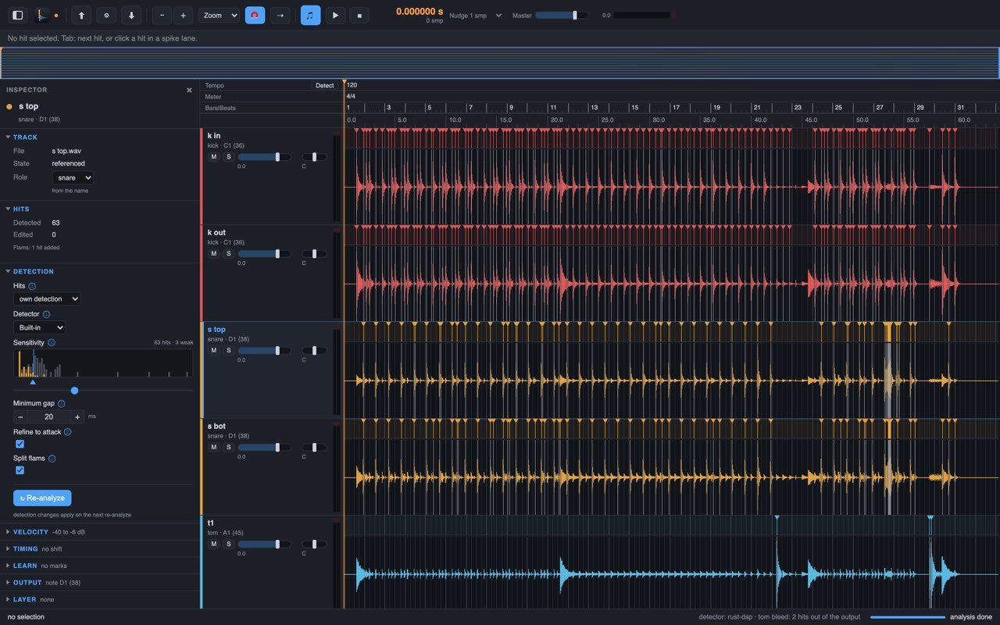

Drum Spike finds every hit in your close-mic drum tracks, puts each one on the first sample of its attack, and exports MIDI and spike files that trigger on time.
Latest release · signed and notarized by Apple · release notes and checksums
Which one? Apple menu › About This Mac: "Chip: Apple M…" is Apple silicon, "Processor: Intel" is Intel.
Three steps from your recording to triggers that fire on time.
Drum Spike listens to each close mic for its own drum only. It checks which mic heard a hit first and how the hit sounds: a kick in the snare mic is bleed, not a snare hit.
Each hit moves to the first motion of its attack. A soft ghost note and a loud backbeat get the same point.
Per track, on your session's time. Spike type Audio writes a short piece of the track's own audio at each hit: the body of the hit, not a click.
A trigger that fires one millisecond late against the close mic cuts holes into the sound at 500 Hz, 1.5 kHz and 2.5 kHz, right where a snare has its body and crack. Level-based transient detection fires late on soft hits and early on loud ones, and it fires on bleed.
Drum Spike puts every hit on the first motion of its attack, soft or loud.
Drum Spike watches each close mic for a sudden rise of energy in its drum's own frequency bands, and keeps a hit only when it sounds like that drum.
Then Drum Spike walks back from the attack's peak, sample by sample, to the first motion of the attack. The threshold sits 33 dB under the peak and stays over the noise before the hit.
The result is the start of the attack, not the moment a level is crossed.
Step 1 does the whole job. The other steps are there when you need them.
Add your drum tracks, let Drum Spike find the hits, export MIDI and spike files.
the whole job Guide: part 1Listen, zoom in, and correct a hit by hand. The app shows the doubtful hits first.
when a hit is wrong Guide: part 2Bleed rules keep the other drums out, flams become two hits, and tempo, followers and layers run on their own.
for difficult sessions Guide: part 3Run Drum Spike from scripts or AI agents with its command line and MCP server. Detector plug-ins add their own detectors; Drum Spike asks for a plug-in's licence before first use. Guide: detector plug-ins
for power users Guide: part 4Each step has a short guide. Read the guides

Drum Spike is free. Its source code is on GitHub under the Apache License 2.0.
A Rust core for the detection and the sample-exact placement, a Tauri desktop app, a headless CLI and an MCP server.
# on an Apple silicon Mac with Xcode tools, Rust and Node git clone https://github.com/Cherry-Blossom-Valley/drumspike cd drumspike apps/desktop/scripts/build-dmg.sh # for Intel, add: --arch x86_64
The detection, the threshold and the walk back are in the code, with tests. No black box between your tracks and your triggers.
No account, no upload, no tracking. The analysis runs locally.
Report a session that trips it up, propose a fix, or add a kit preset. Pull requests are welcome.